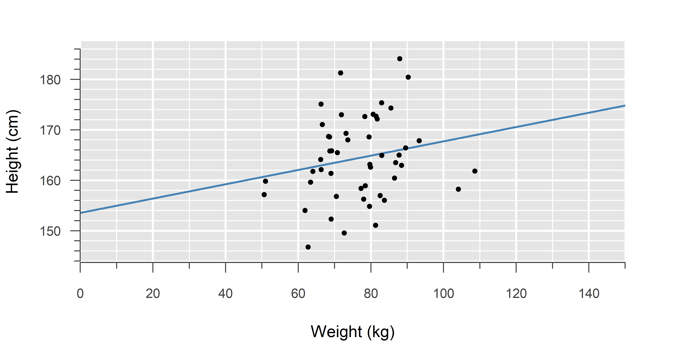
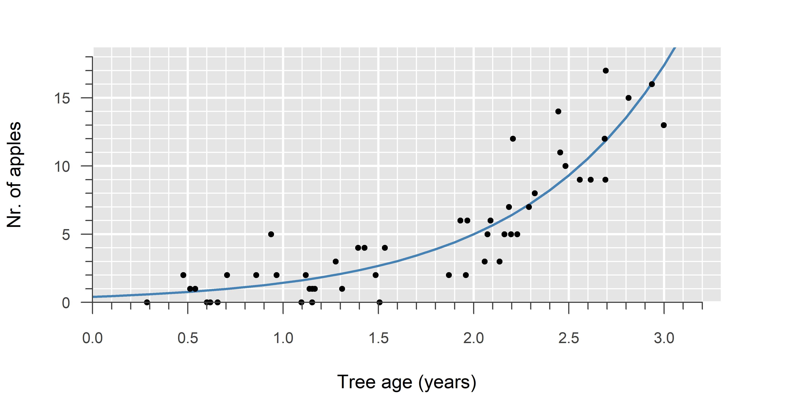
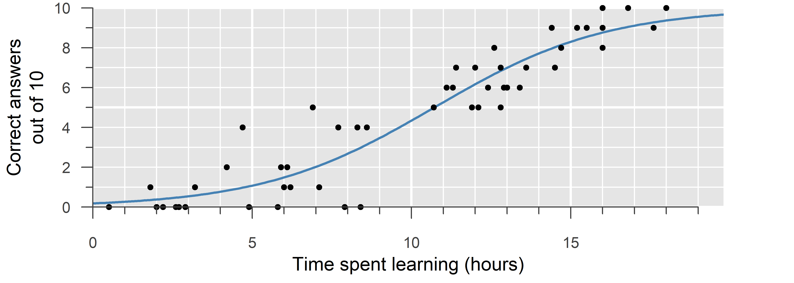
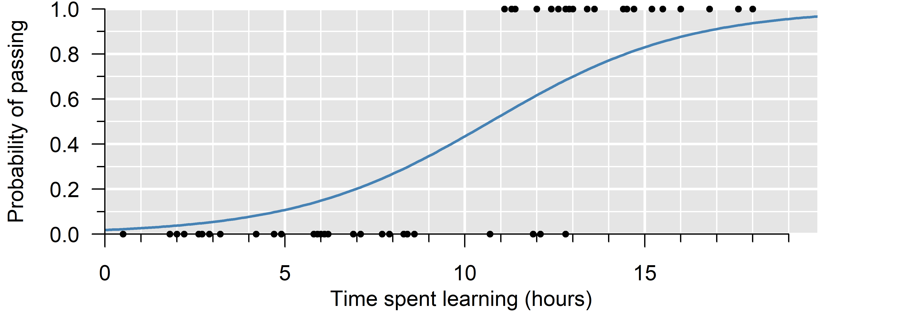

2 Generalized Linear Models
Linear regression with counts, ratios and more.
Ordinary linear regression assumes the outcome is conditionally normal.1 A generalized linear model (GLM) extends linear regression to other probability distributions, like Poisson for counts and binomial for binary outcomes and ratios.
2.1 Properties
Mathematical formula:
\[\begin{align}
\label{lm}
y &= \beta_0 + \beta_1 \cdot x + \epsilon \\ \tag{1a}\\
\epsilon &\sim \mathcal{N}(0, \, \sigma^2)
\end{align}\]
\[\begin{align}
\label{glmnorm}
y &\sim \mathcal{N}(\mu, \, \sigma^2) \\ \\
\mu &= \eta\tag{1b}\\ \\
\eta &= \beta_0 + \beta_1 \cdot x
\end{align}\]
Ordinary linear regression can also be written as a generalized linear model (GLM). This has no particular advantage in terms of analysis, but it may help you understand how this method relates to other GLMs.
Try comparing this formula to that of Poisson and binomial regression: Essentially, we are estimating the location parameter of a distribution, and that parameter changes based on the value of the explanatory variable (\(x\)). The only difference with the other GLMs is which distribution we assume.
The middle equation for each of the three GLMs is the link function; how the location parameter of chosen distribution translates to the linear equation (\(\eta\)). For a normal distribution, this is called the ‘identity’, which just multiplies everything by \(1\), such that the linear equation is the mean of the normal distribution.
Code:
model <- lm(y ~ x, data)import statsmodels.api as sm
model = sm.OLS(y, x).fit()Note: You have to include an intercept manually using x = sm.add_constant(x).
Symbols & definitions
- \(y\) — response variable
-
The outcome.
- Normal distribution
-
See Normal Distribution. \(y \sim \mathcal{N}\! \left(\mu, \, \sigma^2\right)\) means: The outcome follows a conditional2 normal distribution with mean \(\mu\).
- link function
-
A function that stretches the possible range of values of mean of the outcome to \(-\infty\) to \(+\infty\), which is convenient for estimating the model parameters, as it allows us to use a modified version of least squares (iteratively reweighted least squares).
- canonical link function
-
The one link function that translates the linear predictor to the mean of the outcome. For the Poisson distribution, this is the logarithm: \(\log(\lambda)\)
- \(\eta\) — linear predictor
-
The function that describes the relationship between the explanatory variable and the (transformed) mean of the outcome.
- \(x\) — explanatory variable
-
The variable the outcome is regressed on.
- \(\beta_0\) — intercept
-
Value of the outcome (\(y\)), when the explanatory variable (\(x\)) is zero. \(\hat{\beta}_0\) (beta-hat) is its estimate.
- \(\beta_1\) — slope
-
Change in the outcome (\(y\)), when the explanatory variable (\(x\)) increases by one. \(\hat{\beta}_1\) (beta-hat) is its estimate.
Explanation
(…)
Example
This is example uses the iris data set. To use your own data, have a look here ).
Fitting an ordinary linear model can be done by fitting a generalized linear model, but it is good practice to use the simplest possible model/notation. Hence, the example here is merely meant to show that:
- An ordinary linear model is a GLM, and hence…
- …a normal GLM will give you the same results as an ordinary linear model.
Suppose we want to estimate the relationship between the Sepals and Petals of iris flowers. For this example we will consider the Sepal length to be the outcome.
Compare the output of lm with that of glm. Which parts overlap? Which parts are different and why?
LM <- lm(Sepal.Length ~ Petal.Length, data = iris)
summary(LM)
Call:
lm(formula = Sepal.Length ~ Petal.Length, data = iris)
Residuals:
Min 1Q Median 3Q Max
-1.24675 -0.29657 -0.01515 0.27676 1.00269
Coefficients:
Estimate Std. Error t value Pr(>|t|)
(Intercept) 4.30660 0.07839 54.94 <2e-16 ***
Petal.Length 0.40892 0.01889 21.65 <2e-16 ***
---
Signif. codes: 0 '***' 0.001 '**' 0.01 '*' 0.05 '.' 0.1 ' ' 1
Residual standard error: 0.4071 on 148 degrees of freedom
Multiple R-squared: 0.76, Adjusted R-squared: 0.7583
F-statistic: 468.6 on 1 and 148 DF, p-value: < 2.2e-16GLM <- glm(Sepal.Length ~ Petal.Length, data = iris, family = "gaussian")
summary(GLM)
Call:
glm(formula = Sepal.Length ~ Petal.Length, family = "gaussian",
data = iris)
Coefficients:
Estimate Std. Error t value Pr(>|t|)
(Intercept) 4.30660 0.07839 54.94 <2e-16 ***
Petal.Length 0.40892 0.01889 21.65 <2e-16 ***
---
Signif. codes: 0 '***' 0.001 '**' 0.01 '*' 0.05 '.' 0.1 ' ' 1
(Dispersion parameter for gaussian family taken to be 0.1657097)
Null deviance: 102.168 on 149 degrees of freedom
Residual deviance: 24.525 on 148 degrees of freedom
AIC: 160.04
Number of Fisher Scoring iterations: 2Compare the output of sm.OLS with that of sm.GLM. Which parts overlap? Which parts are different and why?
import pandas as pd
import statsmodels.api as sm
iris = sm.datasets.get_rdataset('iris').data
X = iris['Petal.Length']
y = iris['Sepal.Length']
X = sm.add_constant(X) # Add an intercept
model = sm.OLS(y, X).fit()
print(model.summary2()) Results: Ordinary least squares
=================================================================
Model: OLS Adj. R-squared: 0.758
Dependent Variable: Sepal.Length AIC: 158.0404
Date: 2023-09-03 17:57 BIC: 164.0617
No. Observations: 150 Log-Likelihood: -77.020
Df Model: 1 F-statistic: 468.6
Df Residuals: 148 Prob (F-statistic): 1.04e-47
R-squared: 0.760 Scale: 0.16571
------------------------------------------------------------------
Coef. Std.Err. t P>|t| [0.025 0.975]
------------------------------------------------------------------
const 4.3066 0.0784 54.9389 0.0000 4.1517 4.4615
Petal.Length 0.4089 0.0189 21.6460 0.0000 0.3716 0.4463
-----------------------------------------------------------------
Omnibus: 0.207 Durbin-Watson: 1.867
Prob(Omnibus): 0.902 Jarque-Bera (JB): 0.346
Skew: 0.069 Prob(JB): 0.841
Kurtosis: 2.809 Condition No.: 10
=================================================================
Notes:
[1] Standard Errors assume that the covariance matrix of the
errors is correctly specified.import statsmodels.api as sm
import pandas as pd
import statsmodels.api as sm
iris = sm.datasets.get_rdataset('iris').data
X = iris['Petal.Length']
y = iris['Sepal.Length']
X = sm.add_constant(X) # Add an intercept
model = sm.GLM(y, X, family = sm.families.Gaussian()).fit()
print(model.summary2()) Results: Generalized linear model
==============================================================
Model: GLM AIC: 158.0404
Link Function: Identity BIC: -717.0490
Dependent Variable: Sepal.Length Log-Likelihood: -77.020
Date: 2023-09-03 17:57 LL-Null: -311.30
No. Observations: 150 Deviance: 24.525
Df Model: 1 Pearson chi2: 24.5
Df Residuals: 148 Scale: 0.16571
Method: IRLS
---------------------------------------------------------------
Coef. Std.Err. z P>|z| [0.025 0.975]
---------------------------------------------------------------
const 4.3066 0.0784 54.9389 0.0000 4.1530 4.4602
Petal.Length 0.4089 0.0189 21.6460 0.0000 0.3719 0.4459
==============================================================
Mathematical formula:
\[\begin{align} \label{glmpois} y &\sim \mathsf{Pois}(\lambda) \\ \\ \tag{2}\log(\lambda) &= \eta \\ \\ \eta &= \beta_0 + \beta_1 \cdot x \end{align}\]Code:
model <- glm(y ~ x, data, family = "poisson")import statsmodels.api as sm
model = sm.GLM(y, X, family = sm.families.Poisson()).fit()Note: You have to include an intercept manually using X = sm.add_constant(X).
Symbols & definitions
- \(y\) — response variable
-
The outcome.
- Poisson distribution
-
See Poisson Distribution. \(y \sim \mathsf{Pois}(\lambda)\) means: The outcome follows a conditional3 Poisson distribution with rate \(\lambda\).
- link function
-
A function that stretches the possible range of values of mean of the outcome to \(-\infty\) to \(+\infty\), which is convenient for estimating the model parameters, as it allows us to use a modified version of least squares (iteratively reweighted least squares).
- canonical link function
-
The one link function that translates the linear predictor to the mean of the outcome. For the Poisson distribution, this is the logarithm: \(\log(\lambda)\)
- \(\eta\) — linear predictor
-
The function that describes the relationship between the explanatory variable and the (transformed) mean of the outcome.
- \(x\) — explanatory variable
-
The variable the outcome is regressed on.
- \(\beta_0\) — intercept
-
Value of the outcome (\(y\)), when the explanatory variable (\(x\)) is zero. \(\hat{\beta}_0\) (beta-hat) is its estimate.
- \(\beta_1\) — slope
-
Change in the outcome (\(y\)), when the explanatory variable (\(x\)) increases by one. \(\hat{\beta}_1\) (beta-hat) is its estimate.
Explanation
(…)
Example
This is example uses the ... data set. To use your own data, have a look here ).
Suppose we want to estimate the relationship between the … and ….
…
…

Mathematical formula:
\[\begin{align} \label{glmbinom} y &\sim \mathsf{Binom}(n, \, p) \\ \\ \tag{3a}\log \left( \frac{p}{1-p} \right) &= \eta \\ \\ \eta &= \beta_0 + \beta_1 \cdot x \end{align}\]Code:
model <- glm(cbind(success, failure) ~ x, data, family = "binomial")import statsmodels.api as sm
model = sm.GLM(y, X, family = sm.families.Binomial()).fit()Note: You have to include an intercept manually using X = sm.add_constant(X).

Mathematical formula:
\[\begin{align} \label{glmbernoulli} y &\sim \mathsf{Bernoulli}(p) \\ \\ \tag{3b}\log \left( \frac{p}{1-p} \right) &= \eta \\ \\ \eta &= \beta_0 + \beta_1 \cdot x \end{align}\]Code:
model <- glm(y ~ x, data, family = "binomial")import statsmodels.api as sm
model = sm.GLM(y, X, family = sm.families.Binomial()).fit()Note: You have to include an intercept manually using X = sm.add_constant(X).
Symbols & definitions
- \(y\) — response variable
-
The outcome.
- binomial distribution
-
See Binomial Distribution. \(y \sim \mathsf{Binom}(n, \, p)\) means: The outcome follows a conditional4 binomial distribution with \(n\) trials and probability of success \(p\).
- Bernoulli distribution
-
In case \(n = 1\), the binomial distribution simplifies to what is called the Bernoulli distribution.
- link function
-
A function that stretches the possible range of values of mean of the outcome to \(-\infty\) to \(+\infty\), which is convenient for estimating the model parameters, as it allows us to use a modified version of least squares (iteratively reweighted least squares).
- canonical link function
-
The one link function that translates the linear predictor to the mean of the outcome. For the binomial distribution, this is the logarithm of the odds, or logit: \(\log \left( \frac{p}{1-p} \right)\)
- \(\eta\) — linear predictor
-
The function that describes the relationship between the explanatory variable and the (transformed) mean of the outcome.
- \(x\) — explanatory variable
-
The variable the outcome is regressed on.
- \(\beta_0\) — intercept
-
Value of the outcome (\(y\)), when the explanatory variable (\(x\)) is zero. \(\hat{\beta}_0\) (beta-hat) is its estimate.
- \(\beta_1\) — slope
-
Change in the outcome (\(y\)), when the explanatory variable (\(x\)) increases by one. \(\hat{\beta}_1\) (beta-hat) is its estimate.
Explanation
(…)
When collecting data, if you have the choice, always use the original number of successes and failures, not a proportion, or percentage! Computing a percentage throws away valuable information.
Example
This is example uses the ... data set. To use your own data, have a look here ).
Suppose we want to estimate the relationship between the … and ….
…
…
Simple linear regression assumes the errors are normally distributed around the regression line. This is the same as saying that the outcome follows a normal distribution conditional on the model.↩︎
Since \(\mu\) depends on \(x\), the outcome follows a conditional normal distribution. Some write this as \(y|x \sim \mathcal{N}\!\left(\mu, \, \sigma^2 \right)\), but I opted for simpler notation here.↩︎
Since \(\lambda\) depends on \(x\), the outcome follows a conditional Poisson distribution. Some write this as \(y|x \sim \mathsf{Pois}(\lambda)\), but I opted for simpler notation here.↩︎
Since \(p\) depends on \(x\), the outcome follows a conditional binomial distribution. Some write this as \(y|x \sim \mathsf{Binom}(n, \, p)\), but I opted for simpler notation here.↩︎